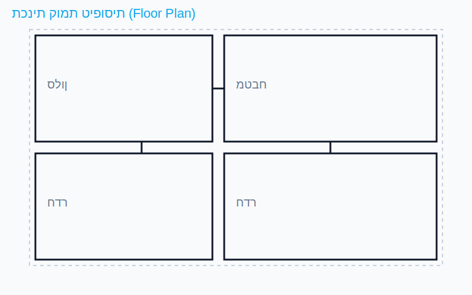
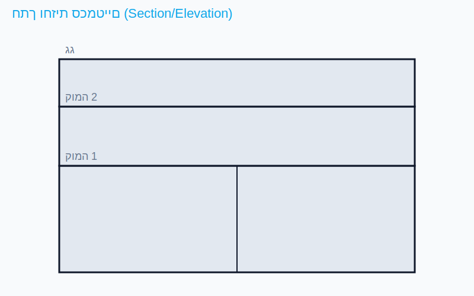
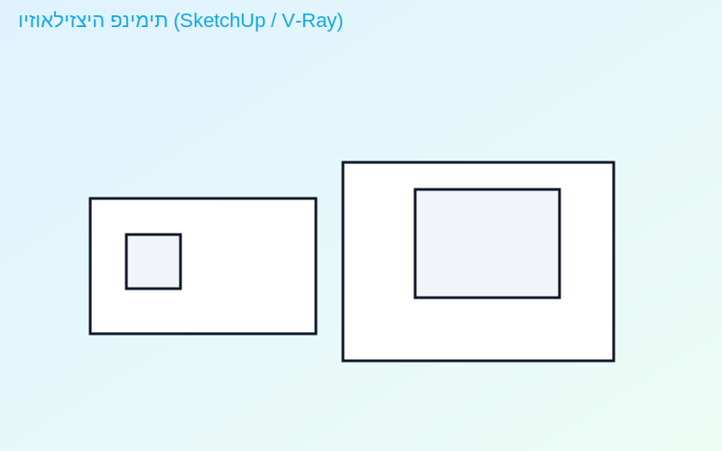
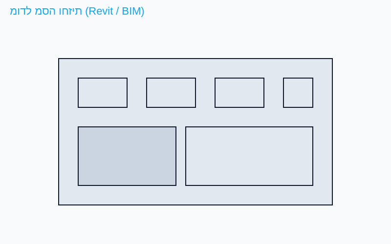

הנדסאי אדריכלות ועיצוב פנים
מסלול משולב המפתח חשיבה תכנונית־מרחבית, ידע הנדסי בסיסי וכישורי עיצוב פנים מודרניים – מהסקיצה ועד מודל תלת־ממדי והגשת סט תוכניות מלא.




מהות המסלול
המסלול מכשיר הנדסאיות אדריכלות להשתלבות בתחום התכנון והעיצוב: עבודה בסטודיו, הבנת תהליך התכנון, הכרת תקנות ותווי תקן, חומרים ושיטות בנייה, תיאום בין־תחומי ומעבר מתכנון קונספט לתיעוד ביצוע מפורט.
מקצועות ונושאי לימוד מרכזיים
- יסודות המרחב, קומפוזיציה ותכן אדריכלי (סטודיו תכנון).
- עיצוב פנים, תכנון ריהוט וארגונומיה.
- יסודות השרטוט ושרטוט ממוחשב (CAD), קריאת תוכניות ומדידות.
- תורת הבנייה, סטטיקה בסיסית, חומרים וטכנולוגיות בנייה.
- מערכות בניין: חשמל, תאורה, מיזוג, אינסטלציה וניקוז.
- תקנים, נגישות, בטיחות ואקוסטיקה בסיסית.
- תיעוד אדריכלי מתקדם: תוכניות, חתכים, חזיתות ופרטי ביצוע.
- מודלים פיזיים ודיגיטליים, הדמיה ותצוגה.
- ניהול פרויקט ופרויקט גמר מקיף.
* פירוט התכנית מבוסס על קווי־היסוד של תכנית הלימודים הרשמית והאוגדנים של מגמת 2311 – אדריכלות ועיצוב פנים.
כלי תוכנה ותוצרים
במהלך הלימודים נרכשות שליטות מעשיות בתוכנות מקצועיות: AutoCAD לשרטוט ותיעוד, Revit ל־BIM ודגם מידע בניין, SketchUp למידול מהיר ו־V‑Ray להדמיה פוטוריאליסטית, לצד כלים משלימים לפי צורך.
התוצרים כוללים סט תוכניות מלא, מודלי תלת־ממד, פרטי ביצוע והדמיות איכותיות כחלק מתיק עבודות.
רוצה לשמוע עוד?
מעבר לרישום
צוות הרישום מחכה לפנייה שלך לשאלות והתאמה למסלול.